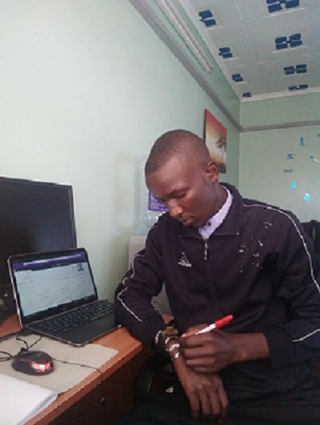

Hey there! (Looking for the blog? Click here.)
My name is Mutia Dishon, and I’m a senior studying Computer Science at Chuka University in the leeward side of Mt.Kenya.
I love to solve problems. Whether it’s finding the most elegant way to write a line of code or figuring out which chord fits best into a progression, I love the challenge of finding a way and discovering solutions. Maybe that’s why I love writing and the satisfaction that comes from finding just the right word; or why I study psychology and rationality as a way of relaxing and getting rid of my exhaustion (when relaxing) to figure out how people think. As long as there’s a problem to solve or a challenge to puzzle over, it’s bound to be something I love so much in my life.
Hello, and might you be wondering if I might be a good fit for your company? Check out here is my LinkedIn profile!
I am a patriotic Kenyan citizen by birth. I’m an alumnus of Emobilis School of Technology in Westlands, where I was equiped with professional programming skills which helps me in my daily life. I attended high school back in my county of origin, and while I sometimes feel a little out to explore the world’s Technology.
I liked to keep myself busy; over the course of my high school years, I’ve been on my school’s wild-life club, a choir member at my church, and team’s speaker. In university, I’ve been active member of wild-life club, choir, and am a member of the university’s Developer Student Club Leads Program, are passionate leaders at their university who are dedicated to helping their peers learn and connect. These Leads may be pursuing various degrees but have a good foundational knowledge of software development concepts.
This site is host to a variety of things professional and personal; you can learn more about who I am, why I love what I study, or read my student blog–and if you have any questions, you can contact me via e-mail.
Have a blessed day, And take care!!!💝💝💝